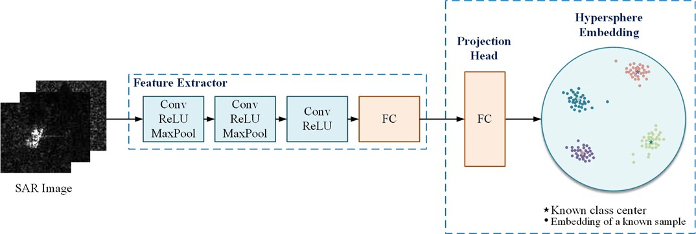

Yue Li
Welcome! I am now a graduate student in Communication Engineering at the University of Electronic Science and Technology of China (UESTC). My research foucuses on remote sensing image interpretation, deep learning and radar target recognition, with a specific emphasis on tackling the challenges of target classification and recognition in open-world scenarios. For more information on my research interests and experience, check out my Research page!
Education
MS in Communication Engineering, Expected 2024
University of Electronic Science and Technology of China
BS in Communication Engineering, 2021
Hefei University
Research Experience
I am currently focusing on Synthetic Aperture Radar (SAR) target recognition in open-world scenarios,
that is, our model is expected to acheive two goals simultaneously:
(1) classify images of known classes correctly; (2) recognize unknown classes that have not been seen during training stage.
My role: Main researcher

- Modeled extracted features onto a unit hypersphere with von Mises-Fisher (vMF) distribution to improve the inter-class separability of learned representations
- Measured the similarity of samples to each class center by angular difference and designed a discrimination criterion to detect unknown targets based on this metric
- Optimized the embedding space with prototype learning to pull away the prototype representations of known classes, allowing as much space as possible for unknown classes
- Implemented the algorithm and evaluated the performance on a public SAR imagery dataset (MSTAR)
My role: Main researcher

- Proposed a threshold-free open-set learning network for SAR target recognition
- Improved the network structure of GAN to formulate the open-set recognition problem as a K+1 classification task, allowing the model to achieve both known classes classification and unknown classes identification automatically
- Optimized the embedding space with prototype learning to pull away the prototype representations of known classes, allowing as much space as possible for unknown classes
- Implemented the algorithm and evaluated the performance on a public SAR imagery dataset (MSTAR)
My role: Main researcher

- Established a feature embedding network based on Siamese structure to extract discriminative features for few-shot SAR target recognition
- Developed a subspace learning-based classifier to identify the type of SAR target
- Evaluated the performance of the proposed method and compared it with three popular models on a public SAR dataset (MSTAR)
Publications
Journal Paper:
- Threshold-free Open-set Learning Network for SAR Automatic Target Recognition
Yue Li, Haohao Ren, Xuelian Yu, Chengfa Zhang, Lin Zou, and Yun Zhou
IEEE Geoscience and Remote Sensing Letters 2023 | paper
Patent:
- A few-shot SAR automatic target recognition method based on Siamese subspace classification network
Xuelian Yu,Yue Li, Haohao Ren, Sen Liu, Fulu Dong, Lin Zou, and Yun Zhou
CN patent No. CN202211159684.0 | September 2022